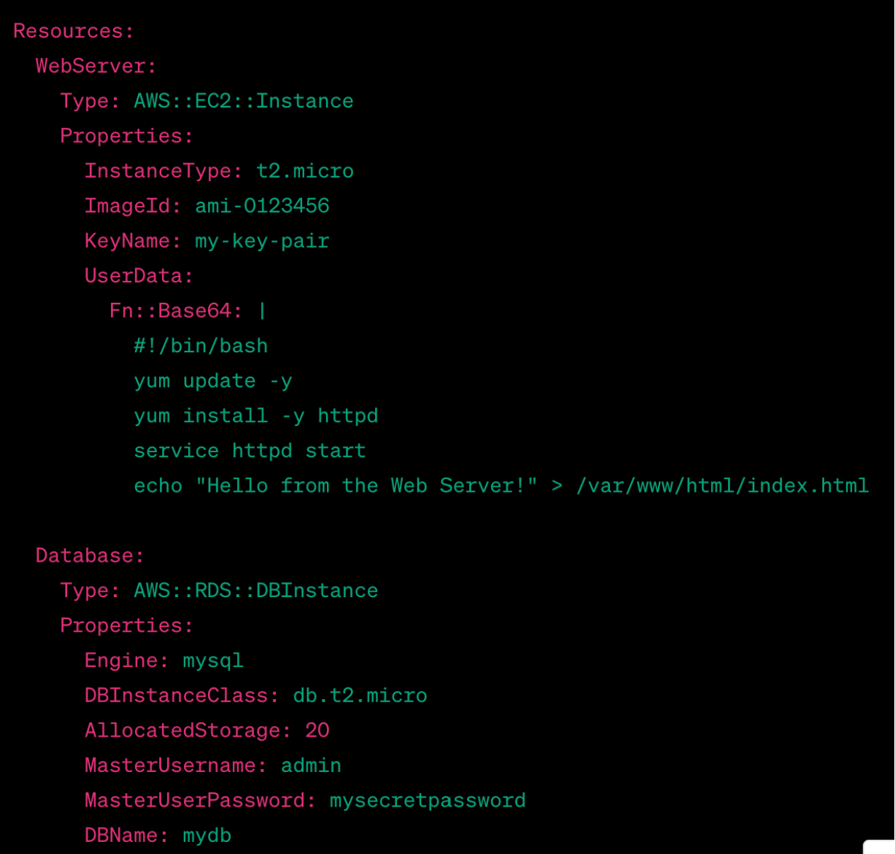
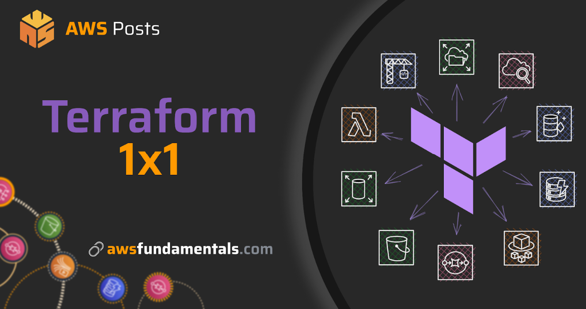

Mastering AWS Infrastructure as Code: The Ultimate Step-by-Step Tutorial
Introduction:
Overheard Conversation: Introduction to Infrastructure as Code (IaC)
John: Hey, have you ever had to set up a new computer or a smart gadget and wished there was an easier way to do it?
Smith: Oh, totally! It can be such a hassle.
John: Well, let’s say you could just write down instructions in plain English or some simple programming code, and your computer or gadget would magically set itself up, just the way you like it.
Smith: Seriously? That could be a game-changing solution!
John: That's what they call Infrastructure as Code, or IaC. It is like giving your gadget a mind of its own, but instead of teaching it tricks, will tell it how to set itself up.
Smith: So, you're saying I could make my devices do what I want without a tech headache?
John: Exactly! It's like having a tech-savvy friend who takes care of all the nitty-gritty stuff for you.
Smith: That sounds like something I need in my life. Tell me more, buddy.
John: Great! Let’s learn through this blog then.
Designing Cloud Architecture with Infrastructure as Code (IaC)
In this blog, we will look at the art of designing cloud architecture using code, opening up a world where creativity has no limits.
In this wide blog, we will dive into the world of AWS Infrastructure as Code, exploring its importance, benefits, and step-by-step implementation with practical examples.
In the modern cloud computing world, Infrastructure as Code (IaC) has become a critical practice for managing and provisioning virtual infrastructure in a scalable, efficient, and automated manner.
Amazon Web Services (AWS) offers a wide set of services and tools that enable developers and operations teams to implement IaC effectively.
So let’s understand the IaC concept.
1. Understanding Infrastructure as Code (IaC)
In this topic, we will try to “understand Infrastructure as Code” but before that, we will study “what is Infrastructure as Code?”.
1.1 What Is Infrastructure As Code (IaC)?
Imagine you're building a super cool city in a video game. You need to place buildings, roads, parks, and all sorts of stuff to make the city work smoothly.
Now, instead of manually placing each building and road, what if you could just write down instructions for the computer to create your city exactly how you want it? That's like what Infrastructure as Code (IaC) does but in the real world.
Okay, let's bring this idea to the real world of software engineering. You know companies have to set up their IT infrastructure, like servers, networks, and databases, to run their apps and websites, right? However, doing all this setup manually can be slow and liable to mistakes.
That's where Infrastructure as Code comes in. Instead of manually setting up everything, you write down instructions in the form of code using any one of the programming languages. This code tells computers how to create and configure all the necessary parts of the IT infrastructure.
Instead of someone spending hours clicking buttons and typing commands, you will simply write the code using a programming language like YAML or JSON.
Now you will be thinking about what this YAML or JSON is exactly. I will explain what exactly YAML or JSON means in short. So, you will get a clear idea about this YAML or JSON.
Here's a simple explanation:
YAML:
YAML stands for “yet another markup language”.
The code writing with this language is like writing a to-do list in a clear, easy-to-read way.
The YAML format closely resembles how one would naturally document structured data on physical paper.
It is designed purposefully to be easier for humans to read.
JSON:
JSON stands for “JavaScript Object Notation”.
It is a way to structure and represent data in a format that is easy for both humans and computers to understand.
In JSON, data is organized into key-value pairs, where each key is associated with a value.
In short, use YAML for simplicity and readability, and JSON for complexity and compatibility code writing.
You will execute the code, and the computers set up everything exactly as you planned. It's way faster and much less likely to have mistakes.
Plus, since everything is written in code, you can save it, share it, and even change it whenever you need to. Let's say the company needs to add more servers later. Instead of going through the whole setup process again, you just update your code to include the new servers, and the computer takes care of the rest.
So, Infrastructure as Code is like giving computers the power to build and manage the servers, networks, and all that tech stuff we use every day while developing software. It's efficient, less error-prone, and makes life easier for engineers.
Understanding Infrastructure as Code (IaC)
Now that we understand IaC in these simple words, let's go ahead and define this concept.
Infrastructure as Code (IaC) is a way to build computer things in the cloud using words and instructions. Instead of setting up each thing manually, you write down how you want them to be in a special language. Then, tools understand these instructions and build your digital things exactly the way you described. It's like offering precise guidance to construct a complex structure but for computer elements in the cloud.
Infrastructure as Code means creating and setting up IT infrastructure using code and automation. This makes it easy to do things the same way every time.
Infrastructure as Code (IaC) is a smart method for managing and setting up computer things using code and automation. Instead of doing things manually, it's like using a special language to control and arrange everything. This helps make things better, just like how software developers work on their projects.
So, in this blog, we will start with the definition of Infrastructure of code, why it is important, and its benefits.
1.2 Infrastructure as Code Defined:
At its core, IaC involves writing code to define, configure, and deploy infrastructure components. These components can include virtual machines, networks, storage, load balancers, databases, and more.
By expressing infrastructure configurations as code, organizations can ensure that their infrastructure is consistent, repeatable, and easily manageable across various environments, such as development, testing, and production.
We have discussed the definition of Infrastructure as a code. Now let’s understand what is the importance of IaC?
2. Importance of IaC:
We will discuss the Importance of IaC through some points as below. They are shown below:
Consistency and Reproducibility:
IaC has Consistency and Reproducibility. Traditional manual setups can lead to configuration drift, where different environments have slight differences in settings. IaC ensures that infrastructure configurations are identical each time they are deployed, reducing errors caused by inconsistency.
With IaC, your computer systems are set up the same way every time, which reduces mistakes caused by differences.
Version Control:
Think of Infrastructure as Code as a special notebook where you write down changes. It helps you remember who did what and when. This is like having a book that tracks the changes made in a story.
In the same way, Infrastructure code can be stored in version control systems like Git. This allows teams to track changes, review history, and collaborate effectively, similar to how developers collaborate on software projects.
Efficiency:
Manual provisioning of infrastructure can be time-consuming and susceptible to errors. IaC automates the process, resulting in faster deployments and reduced operational overhead.
Scalability:
When we need more copies of any document, we use the photocopy machine to get the desired number of extra copies by simply using the machine. Similarly, with IaC, we can easily create more infrastructure resources by simply altering changes in the configuration file, which we also call code.
By modifying a configuration file, you can easily increase or decrease the number of instances, resources, or services as needed.
Disaster Recovery:
Suppose a big sea wave came and messed up the sand castle that you built. However, if you had a picture of the castle, it would be easy for you to build it exactly in the same way with less time IaC does something similar called Disaster Recovery.
If there's a problem, you can rebuild the IT infrastructure exactly as it was, using the configuration file.
Now you have got the importance of IaC using key points.
Now we will discuss examples of IaC tools that help to set up various IT infrastructures.
3. Examples of IaC Tools:
Well, here we got to know that by using the IaC concept, we can deploy IT infrastructure in less time and with consistency. However, are we going to sit and write the code in the configuration file every time? Certainly not!
We have a lot of tools to make this task more easier, efficient and manageable. These tools will bring in automation, consistency, speed, reproducibility, version control, scaling, testing, modularity, documentation and collaboration. These tools will simply make the process easier.
So, let’s see how tools like AWS CloudFormation, Terraform, and AWS CDK codes are used to do this task in an easy way.
Now we will discuss the theory of IaC example tools with practical examples. So, you will get a clear idea about IaC.
3.1 AWS CloudFormation:
Firstly, AWS CloudFormation is a service provided by Amazon Web Services (AWS). Also, AWS CloudFormation is one of the tools of IaC.
In this, we will discuss AWS CloudFormation concepts in detail.
AWS CloudFormation allows you to define and manage your cloud infrastructure in a structured and automated way. Instead of setting the resources in the infrastructure one by one, it lets you describe your desired cloud resources and their configurations using a template, which is written in a specific format called JSON or YAML programming language.
CloudFormation then takes this template and handles the provisioning and management of your resources, ensuring consistency, scalability, and ease of deployment across different environments.
In simpler terms, AWS CloudFormation helps you set up and control your cloud resources without having to manually do everything.

Amazon Web Services (AWS) CloudFormation is a powerful service that allows you to define, deploy, and manage AWS infrastructure resources using code templates. It serves as a fundamental part for implementing Infrastructure as Code (IaC) within the AWS environment.
With CloudFormation, you can create, update, or delete resources in a consistent and controlled manner, making it an essential tool for managing complex infrastructures.
AWS CloudFormation is an indigenous AWS service that uses JSON or YAML templates to define and manage AWS resources.
Now, we will discuss more about all the key concepts of AWS CloudFormation one by one.
Here are some key concepts of AWS CloudFormation as given below:
To understand key concepts of AWS CloudFormation easily we can refer to one image as shown below:
Templates:
CloudFormation templates are JSON or YAML files that describe the resources you want to create, their properties, and any dependencies between them. Templates can be versioned, stored in source control, and reused across different environments.
Stacks:
A stack is a collection of AWS resources created and managed as a single unit. You create a stack by providing a template and specifying a stack name. Stacks can be created, updated, and deleted as a whole, making it easier to manage and track changes to your infrastructure.
Resources:
Resources are the individual components that make up your infrastructure, such as Amazon EC2 instances, Amazon RDS databases, Amazon S3 buckets, etc. Resources are defined in your CloudFormation template.
Parameters:
Parameters are inputs that you can provide when creating or updating a stack. They allow you to customize the behavior of your CloudFormation template without modifying the template itself.
Mappings:
Mappings are sets of key-value pairs that can be used in templates to specify conditional values based on certain input parameters or conditions.
Outputs:
Outputs are values that CloudFormation exports from the stack after it's created or updated. These values can be used by other AWS services or resources.
Change Sets:
Before applying updates to a stack, CloudFormation allows you to review the proposed changes using a change set. A change set shows the differences between the current stack and the updated template, giving you a chance to review and approve changes before applying them.
Nested Stacks:
You can use nested stacks to break down complex templates into smaller, reusable components. Each nested stack is treated as a separate CloudFormation stack, allowing you to manage and update different parts of your infrastructure independently.
Cross-Stack References:
CloudFormation enables you to reference resources from other stacks using cross-stack references. This can be useful when you have resources in different stacks that need to interact with each other.
Stack Policies:
Stack policies allow you to control the permissions for updates to specific resources within a stack. This can help prevent accidental modifications to critical resources.
Drift Detection:
CloudFormation offers drift detection, which helps you identify and compare the actual resources in your stack with the expected template configuration. This can be useful for identifying unauthorized changes.
CloudFormation simplifies the process of managing and scaling your AWS infrastructure by automating resource provisioning and tracking changes over time. It's a powerful tool for infrastructure as code (IaC) practices, allowing you to maintain consistency, version control, and reproducibility in your cloud environment.
Till now we have discussed the introduction of AWS CloudFormation and the key concepts of AWS CloudFormation ( The one of IaC Tool).
Now we will discuss AWS CloudFormation concepts using practical examples. They are given below:
3.1.2 Templates
As we already discussed the theory about templates.
Here's an example of a CloudFormation template that demonstrates the various components and steps involved.
This template creates an Amazon S3 bucket and an Amazon DynamoDB table.
Remember that this is a simplified example for demonstration purposes, and actual templates can be much more complex.
AWSTemplateFormatVersion: '2010-09-09'
Description: Example CloudFormation Template
Parameters:
BucketName:
Type: String
Description: Name of the S3 bucket
Default: my-example-bucket
Resources:
MyS3Bucket:
Type: 'AWS::S3::Bucket'
Properties:
BucketName: !Ref BucketName
MyDynamoDBTable:
Type: 'AWS::DynamoDB::Table'
Properties:
TableName: my-example-table
AttributeDefinitions:
- AttributeName: id
AttributeType: N
KeySchema:
- AttributeName: id
KeyType: HASH
ProvisionedThroughput:
ReadCapacityUnits: 5
WriteCapacityUnits: 5
Outputs:
BucketOutput:
Description: S3 Bucket Name
Value: !Ref MyS3Bucket
Export:
Name:!Sub "${AWS::StackName}-S3Bucket"
TableOutput:
Description: DynamoDB Table Name
Value:!Ref MyDynamoDBTable
Export:
Name:!Sub "${AWS::StackName}-DynamoDBTable"
Explanation of the above steps:
AWSTemplateFormatVersion: It specifies the CloudFormation template version. In this case, it's using the '2010-09-09' version.
Description: It provides a short description of the template's purpose.
Parameters: It defines a parameter named "BucketName" that allows users to provide a name for the S3 bucket. The default value is set to "my-example-bucket."
Resources: It describes the AWS resources to be created. It defines two resources:
- MyS3Bucket: It creates an S3 bucket with the specified name from the "BucketName" parameter.
- MyDynamoDBTable: It creates a DynamoDB table with an "id" attribute as the primary key and specified provisioned throughput.
Outputs: It specifies values to be exported from the stack for reference by other resources.
- BucketOutput: It exports the name of the S3 bucket using!Ref and create an export name using ${AWS::StackName}-S3Bucket.
- TableOutput: It exports the name of the DynamoDB table in a similar manner.
In this example, users would provide the "BucketName" parameter value when creating the stack.
The outputs of the stack would be the names of the created S3 bucket and DynamoDB table, which can be referenced by other AWS resources within the same AWS account and region.
To deploy this template, you would use AWS CloudFormation Console, AWS CLI, or SDKs to create a stack using the template file. The result would be the creation of the specified S3 bucket and DynamoDB table.
Now we will discuss the 2nd key concept of CloudFormation i.e Stack.
A fundamental concept in CloudFormation is the "stack." In AWS CloudFormation, a "stack" refers to a collection of AWS resources that you create, manage, and delete as a single unit. It's like packaging up all the parts of your application or infrastructure into one bunch.
When you create a stack, you define the resources you want, like servers, databases, and networks, in a template. Then, CloudFormation takes care of provisioning and managing those resources for you.
Stacks make it easier to manage complex applications because you can create, update, or delete all the related resources in a consistent and controlled way.
So let's walk through the process of creating a CloudFormation stack step-by-step.
Step 1: Writing a CloudFormation Template
These templates define the desired state of your infrastructure, including resources, properties, and dependencies.
Save the CloudFormation template from the previous example as a file named stack-template.yaml:
AWSTemplateFormatVersion: '2010-09-09'
Description: Example CloudFormation Template
Parameters:
BucketName:
Type: String
Description: Name of the S3 bucket
Default: my-example-bucket
Resources:
MyS3Bucket:
Type: 'AWS::S3::Bucket'
Properties:
BucketName: !Ref BucketName
MyDynamoDBTable:
Type: 'AWS::DynamoDB::Table'
Properties:
TableName: my-example-table
AttributeDefinitions:
- AttributeName: id
AttributeType: N
KeySchema:
- AttributeName: id
KeyType: HASH
ProvisionedThroughput:
ReadCapacityUnits: 5
WriteCapacityUnits: 5
Outputs:
BucketOutput:
Description: S3 Bucket Name
Value: !Ref MyS3Bucket
Export:
Name: !Sub "${AWS::StackName}-S3Bucket"
TableOutput:
Description: DynamoDB Table Name
Value: !Ref MyDynamoDBTable
Export:
Name: !Sub "${AWS::StackName}-DynamoDBTable"
The above example is already explained in the Template creation. So, we are taking the above example as a reference for the stack creation. So, you will clearly understand the stack creation.
Replace my-stack with a desired name for your stack and my-bucket-name with the desired S3 bucket name.
Now let's discuss the above commands as below:
Let's break down the AWS CloudFormation command you provided step by step:
aws cloudformation create-stack:--stack-name my-stack:--template-body file://stack-template.yaml:--parameters ParameterKey=BucketName, ParameterValue=my-bucket-name:
This part of the command tells the AWS Command Line Interface (CLI) to use the AWS CloudFormation service and create a new stack.
Here, you specify the name you want to give to your CloudFormation stack. In this example, it's named "my-stack." The stack name must be unique within your AWS account.
This part of the command tells CloudFormation where to find the template that defines your stack. --template-body is followed by file://stack-template.yaml. The meaning of the above command is the template is stored locally on your computer with the filename "stack-template.yaml." CloudFormation will read this file to understand how to create your stack.
In CloudFormation templates, you can define parameters that allow you to customize your stack when you create it. This part of the command sets a parameter named "BucketName" to the value "my-bucket-name." It's important to note that parameter values are typically provided as key-value pairs in the format ParameterKey=SomeKey, ParameterValue=SomeValue.
So, in summary, this AWS CloudFormation command is creating a new stack named "my-stack" based on the template found in the "stack-template.yaml" file. It also sets the value of a parameter called "BucketName" to "my-bucket-name" during stack creation. This is a simplified example.
Step 5: Wait for Stack Creation
To complete, you can use the following command to wait until the stack creation process completes:
Now, let's break down this command:
aws cloudformation wait stack-create-complete:
This part of the command tells AWS CloudFormation to wait until the specified stack's creation is complete. It means the stack is fully set up and ready to use.
--stack-name my-stack:
Here, you specify the name of the stack you want to wait for. Replace "my-stack" with the actual name of your CloudFormation stack.
After you run this command, AWS CloudFormation will continuously check the status of your stack until it's created successfully. Once the stack creation is complete, the command will exit, and you can proceed with other tasks or operations knowing that your stack is ready for use.
Remember to replace "my-stack" with the name of your specific CloudFormation stack. This command can be particularly useful when you're automating cloud infrastructure provisioning and want to ensure that subsequent steps in your automation process only run when the stack is fully operational.
Step 6: Check Stack Outputs
Once the stack creation step is complete, you can retrieve the stack outputs using this command:
aws cloudformation describe-stacks --stack-name my-stack-name --query "Stacks[0].Outputs"This command will display the exported values from the outputs section of your CloudFormation template.
Certainly, let's break down the AWS CloudFormation command aws cloudformation describe-stacks --stack-name my-stack-name --query "Stacks[0].Outputs":
aws cloudformation describe-stacks:--stack-name my-stack-name:--query "Stacks[0].Outputs":
This part of the command is using the AWS Command Line Interface (CLI) to interact with the AWS CloudFormation service. Specifically, it uses the describe-stacks operation, which retrieves information about one or more stacks.
Here, you specify the name of the stack you want to describe. Replace "my-stack-name" with the actual name of the CloudFormation stack you want to retrieve information about.
This part of the command uses the --query option to filter and format the output. It's like telling AWS CLI to give you only specific information from the stack description.
"Stacks[0].Outputs":
This query instructs AWS CLI to retrieve the "Outputs" section of the first stack ([0] refers to the first stack in case you have multiple stacks with the same name) and display it in the output.
In summary, when you run this command, it will retrieve and display the output values (if any) of the specified CloudFormation stack.
Output values typically contain information that's useful for other parts of your infrastructure or applications, such as endpoint URLs, resource IDs, or configuration details.
Congratulations! You've created a CloudFormation stack using the AWS CLI. This process allows you to automate the creation and management of your AWS resources using infrastructure as code.
Step 7: Monitoring and Handling Errors
CloudFormation provides real-time status updates during stack creation. You can monitor progress and view any errors that occur.
If an error occurs, CloudFormation can automatically roll back the stack to its previous state, ensuring that you don't end up with a partially deployed environment.
Now let us try to understand “Stack Creation” through one real example.
Example:
Launching a Web Application Stack.
Let's consider an example where you're deploying a simple web application stack using CloudFormation:
Scenario: Launching a Web Application Stack
We want to build a simple web application. Instead of setting up each component manually, AWS CloudFormation allows you to define everything in code. Here is a small piece of what your CloudFormation template might look like:
AWS CloudFormation Template:
```htmlIn this, you're creating an EC2 instance for the web server and an RDS database instance using just a few lines of code. You specify instance types, security settings, and even scripts to run when the case instances start.
Let's break down each part of the code:
This CloudFormation code defines two AWS resources: a web server (EC2 instance) and a database (RDS instance).
WebServer:
Type: AWS::EC2::Instance:This parameter specifies that you are creating an Amazon Elastic Compute Cloud (EC2) instance.
InstanceType: t2.micro:This parameter sets the EC2 instance type to "t2.micro," which is a small, general-purpose instance type.
ImageId: ami-0123456:This parameter specifies the Amazon Machine Image (AMI) ID to use for the instance.
KeyName: my-key-pair:This parameter specifies the name of the AWS Key Pair to use for SSH access to the EC2 instance.
UserData:This section provides user data, which is a script that runs when the instance is launched. In this case, it updates the package manager, installs the Apache web server starts it, and creates a basic HTML file.
Database:
Type: AWS::RDS::DBInstance:This parameter specifies that you're creating an Amazon Relational Database Service (RDS) DB instance.
Engine: mysql:This parameter sets the database engine to MySQL.
DBInstanceClass: db.t2.micro:This parameter sets the RDS instance type to "db.t2.micro," which is a small, general-purpose database instance.
AllocatedStorage: 20:This parameter specifies the allocated storage in gigabytes for the RDS instance.
MasterUsername: admin:This parameter sets the master username for the database.
MasterUserPassword: mysecretpassword:This parameter sets the master user's password for the database.
DBName: mydb:This parameter specifies the name of the database to create.
By deploying this CloudFormation template, AWS will automatically handle creating and configuring the instances, ensuring your web application stack is up and running without manual interference.
This approach makes deployment efficient, promotes consistency, and enables easy replication across different environments.
Now you have a clear idea about stack creation in AWS CloudFormation.
Now we will discuss the second IaC tool which is “terraform“.
3.2 Terraform:
Before we discuss Terraform as one of the IAC tools, we will discuss why we need Terraform. Why not other tools? What exactly does Terraform do? As given below:
3.2.1 Why do we need Terraform?
Let’s say you want to build and manage your IT infrastructure, like servers and databases, in the cloud. But different clouds have different rules and languages for building. Terraform is like a universal translator that lets you build and manage your infrastructure in different clouds using the same language.
Terraform is an IAC tool that helps you build and manage your IT infrastructure, like servers, databases, and networks, using a clear and structured approach. Instead of manually setting up each part, you describe what you want in a special programming language. Terraform then takes your description and creates or manages these resources for you, making it easier to set up and maintain your technology infrastructure.
Terraform uses its own domain-specific language called HashiCorp Configuration Language (HCL). It's designed specifically for defining and managing infrastructure resources in a human-readable and declarative way. HCL is not a general-purpose programming language like Python or JavaScript, but it's designed to describe the configuration and relationships of the resources you want to create or manage with Terraform.
The full name of the tool is "HashiCorp Terraform." HashiCorp is the company that created the Terraform tool.
So, you don't have to learn each cloud's rules, and you can easily switch between clouds if you want. It saves your time, reduces mistakes, and makes everything simpler!
Now we will discuss Terraform in technical language. What exactly does Terraform do?
3.2.2 Introduction to Terraform:
Terraform is an open-source tool for building, changing, and versioning infrastructure safely and efficiently.
Terraform is a powerful open-source tool designed to simplify and automate infrastructure provisioning across multiple cloud providers, including AWS. It enables you to define your infrastructure as code using a declarative language, making it easier to create, modify, and manage resources in a consistent and predictable manner.
Till now we have discussed why we need the Terraform tool?, Introduction of Terraform. Now we discuss key concepts of Terraform
3.2.3 Key Concepts Of Terraform:
Terraform introduces several key concepts that contribute to its effectiveness as an Infrastructure as a Code tool:
Declarative Configuration:
With Terraform, you define the desired state of your infrastructure using a declarative syntax. Terraform then takes care of the details of how to achieve that state.
Providers:
Providers are plugins that enable Terraform to interact with various infrastructure platforms, such as AWS, Azure, Google Cloud, etc. The AWS provider allows you to manage AWS resources using Terraform.
Resources:
Resources represent individual infrastructure components, such as EC2 instances, S3 buckets, and VPCs. The things you want to create, like virtual machines, databases, and networks. You define what resources you need in your code.
State:
Terraform keeps track of what you've built and its current status. It's like a checklist showing what you have and what's changed.
Plan:
"Plan" in Terraform is like a preview before you build. It analyzes your infrastructure code and current state and then shows exactly what changes it will make. It's your chance to review and confirm modifications—like looking at a blueprint before building a Lego model. This helps catch errors, prevents surprises, and ensures you're getting the desired outcome before Terraform takes action.
Apply:
"Apply" in Terraform is the action step. After you've planned changes, running Terraform Apply brings your desired infrastructure to life. It compares your code plan with the actual setup, creating, updating, or deleting resources as needed. It's similar to putting together Lego pieces using a plan you've made beforehand. Apply executes changes safely and precisely.
Variables:
In Terraform, variables act as flexible empty spaces for values, allowing you to easily modify attributes like names or sizes in your code. They serve as dynamic slots in your instructions, permitting you to substitute different values as needed. Essentially, they provide adaptability and customization capabilities, similar to having variables in a mathematical equation that can be adjusted to produce various outcomes. This way, you can reuse your code with different values.
Modules:
Modules are like ready-made templates for your infrastructure. They collect resources and settings together, making it simple to reuse and share complex setups. Think of them as pre-built building blocks you can assemble into bigger structures. Modules save time, promote consistency, and let you build with ease, similar to using distinct components for various sections of a model. Think of them as building blocks for your code. Modules are like small building blocks that you can use again and again to create larger setups without having to start everything from the beginning. Modules are reusable, collections of resources that can be shared across projects.
Version Control:
Version control is like keeping different drafts of your Terraform code, just like saving different versions of a story. It helps to track changes, collaborate with others, and return to previous versions if needed. Storing your code in a safe place, like saving different versions of your favourite story. It helps you track changes, work with others, and go back to older versions if needed.
Till now we covered what is Terraform?, the Definition Of Terraform, and the Key Concepts of Terraform.
Now, we will discuss the concept of Terraform practically. Practical implementation of Terraform as discussed below:
3.2.4 Implementing Infrastructure with Terraform:
Implementing infrastructure with Terraform involves several steps:
Step 1: Writing a Configuration File
You define your infrastructure using HashiCorp Configuration Language (HCL), a human-readable domain-specific language.
HashiCorp Configuration Language (HCL) is a domain-specific language developed by HashiCorp, the company behind tools like Terraform, Consul, and Vault. HCL is designed specifically for writing configuration files that define infrastructure resources, settings, and configurations within HashiCorp's ecosystem of tools.
HCL is designed to be easy to read and write, striking a balance between being human-friendly and machine-friendly.
Create a file named
main.tfand define your infrastructure using HCL: